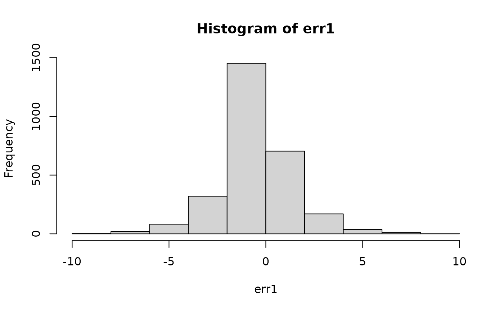

In-sample or out-of-sample predictive errors
Source:R/predictive_error.R
predictive_error.stanreg.RdThis is a convenience function for computing \(y - y^{rep}\)
(in-sample, for observed \(y\)) or \(y - \tilde{y}\)
(out-of-sample, for new or held-out \(y\)). The method for stanreg objects
calls posterior_predict internally, whereas the method for
matrices accepts the matrix returned by posterior_predict as input and
can be used to avoid multiple calls to posterior_predict.
Usage
# S3 method for class 'stanreg'
predictive_error(
object,
newdata = NULL,
draws = NULL,
re.form = NULL,
seed = NULL,
offset = NULL,
...
)
# S3 method for class 'matrix'
predictive_error(object, y, ...)
# S3 method for class 'ppd'
predictive_error(object, y, ...)Arguments
- object
Either a fitted model object returned by one of the rstanarm modeling functions (a stanreg object) or, for the matrix method, a matrix of draws from the posterior predictive distribution returned by
posterior_predict.- newdata, draws, seed, offset, re.form
Optional arguments passed to
posterior_predict. For binomial models, please see the Note section below ifnewdatawill be specified.- ...
Currently ignored.
- y
For the matrix method only, a vector of \(y\) values the same length as the number of columns in the matrix used as
object. The method for stanreg objects takesydirectly from the fitted model object.
Value
A draws by nrow(newdata) matrix. If newdata is
not specified then it will be draws by nobs(object).
Note
The Note section in posterior_predict about
newdata for binomial models also applies for
predictive_error, with one important difference. For
posterior_predict if the left-hand side of the model formula is
cbind(successes, failures) then the particular values of
successes and failures in newdata don't matter, only
that they add to the desired number of trials. This is not the case
for predictive_error. For predictive_error the particular
value of successes matters because it is used as \(y\) when
computing the error.
See also
posterior_predict to draw
from the posterior predictive distribution without computing predictive
errors.
Examples
if (.Platform$OS.type != "windows" || .Platform$r_arch != "i386") {
if (!exists("example_model")) example(example_model)
err1 <- predictive_error(example_model, draws = 50)
hist(err1)
# Using newdata with a binomial model
formula(example_model)
nd <- data.frame(
size = c(10, 20),
incidence = c(5, 10),
period = factor(c(1,2)),
herd = c(1, 15)
)
err2 <- predictive_error(example_model, newdata = nd, draws = 10, seed = 1234)
# stanreg vs matrix methods
fit <- stan_glm(mpg ~ wt, data = mtcars, iter = 300)
preds <- posterior_predict(fit, seed = 123)
all.equal(
predictive_error(fit, seed = 123),
predictive_error(preds, y = fit$y)
)
}

#>
#> SAMPLING FOR MODEL 'continuous' NOW (CHAIN 1).
#> Chain 1:
#> Chain 1: Gradient evaluation took 2e-05 seconds
#> Chain 1: 1000 transitions using 10 leapfrog steps per transition would take 0.2 seconds.
#> Chain 1: Adjust your expectations accordingly!
#> Chain 1:
#> Chain 1:
#> Chain 1: Iteration: 1 / 300 [ 0%] (Warmup)
#> Chain 1: Iteration: 30 / 300 [ 10%] (Warmup)
#> Chain 1: Iteration: 60 / 300 [ 20%] (Warmup)
#> Chain 1: Iteration: 90 / 300 [ 30%] (Warmup)
#> Chain 1: Iteration: 120 / 300 [ 40%] (Warmup)
#> Chain 1: Iteration: 150 / 300 [ 50%] (Warmup)
#> Chain 1: Iteration: 151 / 300 [ 50%] (Sampling)
#> Chain 1: Iteration: 180 / 300 [ 60%] (Sampling)
#> Chain 1: Iteration: 210 / 300 [ 70%] (Sampling)
#> Chain 1: Iteration: 240 / 300 [ 80%] (Sampling)
#> Chain 1: Iteration: 270 / 300 [ 90%] (Sampling)
#> Chain 1: Iteration: 300 / 300 [100%] (Sampling)
#> Chain 1:
#> Chain 1: Elapsed Time: 0.009 seconds (Warm-up)
#> Chain 1: 0.004 seconds (Sampling)
#> Chain 1: 0.013 seconds (Total)
#> Chain 1:
#>
#> SAMPLING FOR MODEL 'continuous' NOW (CHAIN 2).
#> Chain 2:
#> Chain 2: Gradient evaluation took 9e-06 seconds
#> Chain 2: 1000 transitions using 10 leapfrog steps per transition would take 0.09 seconds.
#> Chain 2: Adjust your expectations accordingly!
#> Chain 2:
#> Chain 2:
#> Chain 2: Iteration: 1 / 300 [ 0%] (Warmup)
#> Chain 2: Iteration: 30 / 300 [ 10%] (Warmup)
#> Chain 2: Iteration: 60 / 300 [ 20%] (Warmup)
#> Chain 2: Iteration: 90 / 300 [ 30%] (Warmup)
#> Chain 2: Iteration: 120 / 300 [ 40%] (Warmup)
#> Chain 2: Iteration: 150 / 300 [ 50%] (Warmup)
#> Chain 2: Iteration: 151 / 300 [ 50%] (Sampling)
#> Chain 2: Iteration: 180 / 300 [ 60%] (Sampling)
#> Chain 2: Iteration: 210 / 300 [ 70%] (Sampling)
#> Chain 2: Iteration: 240 / 300 [ 80%] (Sampling)
#> Chain 2: Iteration: 270 / 300 [ 90%] (Sampling)
#> Chain 2: Iteration: 300 / 300 [100%] (Sampling)
#> Chain 2:
#> Chain 2: Elapsed Time: 0.009 seconds (Warm-up)
#> Chain 2: 0.004 seconds (Sampling)
#> Chain 2: 0.013 seconds (Total)
#> Chain 2:
#>
#> SAMPLING FOR MODEL 'continuous' NOW (CHAIN 3).
#> Chain 3:
#> Chain 3: Gradient evaluation took 8e-06 seconds
#> Chain 3: 1000 transitions using 10 leapfrog steps per transition would take 0.08 seconds.
#> Chain 3: Adjust your expectations accordingly!
#> Chain 3:
#> Chain 3:
#> Chain 3: Iteration: 1 / 300 [ 0%] (Warmup)
#> Chain 3: Iteration: 30 / 300 [ 10%] (Warmup)
#> Chain 3: Iteration: 60 / 300 [ 20%] (Warmup)
#> Chain 3: Iteration: 90 / 300 [ 30%] (Warmup)
#> Chain 3: Iteration: 120 / 300 [ 40%] (Warmup)
#> Chain 3: Iteration: 150 / 300 [ 50%] (Warmup)
#> Chain 3: Iteration: 151 / 300 [ 50%] (Sampling)
#> Chain 3: Iteration: 180 / 300 [ 60%] (Sampling)
#> Chain 3: Iteration: 210 / 300 [ 70%] (Sampling)
#> Chain 3: Iteration: 240 / 300 [ 80%] (Sampling)
#> Chain 3: Iteration: 270 / 300 [ 90%] (Sampling)
#> Chain 3: Iteration: 300 / 300 [100%] (Sampling)
#> Chain 3:
#> Chain 3: Elapsed Time: 0.009 seconds (Warm-up)
#> Chain 3: 0.004 seconds (Sampling)
#> Chain 3: 0.013 seconds (Total)
#> Chain 3:
#>
#> SAMPLING FOR MODEL 'continuous' NOW (CHAIN 4).
#> Chain 4:
#> Chain 4: Gradient evaluation took 1.9e-05 seconds
#> Chain 4: 1000 transitions using 10 leapfrog steps per transition would take 0.19 seconds.
#> Chain 4: Adjust your expectations accordingly!
#> Chain 4:
#> Chain 4:
#> Chain 4: Iteration: 1 / 300 [ 0%] (Warmup)
#> Chain 4: Iteration: 30 / 300 [ 10%] (Warmup)
#> Chain 4: Iteration: 60 / 300 [ 20%] (Warmup)
#> Chain 4: Iteration: 90 / 300 [ 30%] (Warmup)
#> Chain 4: Iteration: 120 / 300 [ 40%] (Warmup)
#> Chain 4: Iteration: 150 / 300 [ 50%] (Warmup)
#> Chain 4: Iteration: 151 / 300 [ 50%] (Sampling)
#> Chain 4: Iteration: 180 / 300 [ 60%] (Sampling)
#> Chain 4: Iteration: 210 / 300 [ 70%] (Sampling)
#> Chain 4: Iteration: 240 / 300 [ 80%] (Sampling)
#> Chain 4: Iteration: 270 / 300 [ 90%] (Sampling)
#> Chain 4: Iteration: 300 / 300 [100%] (Sampling)
#> Chain 4:
#> Chain 4: Elapsed Time: 0.006 seconds (Warm-up)
#> Chain 4: 0.004 seconds (Sampling)
#> Chain 4: 0.01 seconds (Total)
#> Chain 4:
#> Warning: Bulk Effective Samples Size (ESS) is too low, indicating posterior means and medians may be unreliable.
#> Running the chains for more iterations may help. See
#> https://mc-stan.org/misc/warnings.html#bulk-ess
#> Warning: Tail Effective Samples Size (ESS) is too low, indicating posterior variances and tail quantiles may be unreliable.
#> Running the chains for more iterations may help. See
#> https://mc-stan.org/misc/warnings.html#tail-ess
#> [1] TRUE